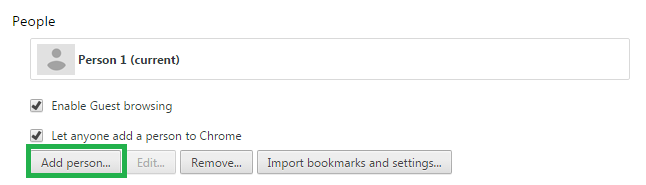
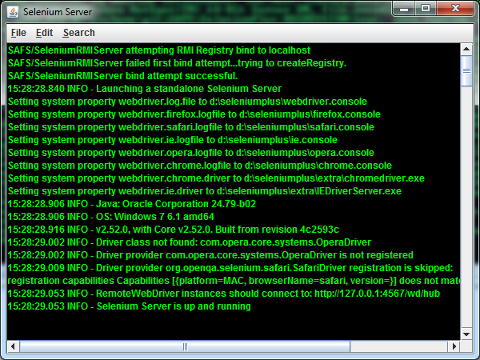
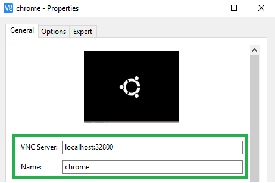

Select "Selenium+ ->Selenium+ Sample Project" in the New Project dialog and click "Next".
Make sure "Use default location" is selected and click "Finish" in the dialog.
If prompted to Associate the project with the Selenium+ perspective select the "Remember my decision" CheckBox and click "Yes".
The SAMPLE project should now be installed for your review and experimentation.
Review the Sample Project
The SAMPLE project shows one desirable way to put together a suite of tests.
The root SAMPLE folder will contain the project's "test.ini" configuration file.
The TestCases package can hold one or more classes of simple testcase actions as shown in the TestCase1.java class.
The TestRuns package can hold one or more classes that piece together test suites that run testcases in any desired sequence as shown in the TestRun1.java class.
The Actuals folder may receive captured runtime files, data, or images.
The Benchmark folder will contain benchmark files, data, or images when required.
The Diffs folder may receive runtime compare differences in files, data, or images.
The Logs folder will receive test log(s) at the end of a test.
The Maps folder will contain tester-defined App Map files and the AppMap.order file used during testing.
Run the Sample Project
In the Package Explorer, select "SAMPLE->Tests->sample.testruns->TestRun1.java"
In the main menu, select "Run->Run As->Selenium+ Test".
(The test should automatically start and run with Google in Firefox.)
When the test completes, Package Explorer should show a "TestRun1.txt" file in the "SAMPLE->Logs" folder.
(You may have to hit Refresh(F5) for the Package Explorer to update.)
Double-click "TestRun1.txt" or right-click it to "Open With...->Text Editor" to see the test results.
Create and Review a New Project
Create a New Project
Right-click in the Package Explorer view.
Select "New->Project..." in the popup menu.
Select "Selenium+ ->Selenium+ Project" in the New Project dialog and click "Next".
Enter a name for the project and click "Finish" in the dialog.
If prompted to Associate the project with the Selenium+ perspective,
select the "Remember my decision" CheckBox and click "Yes".
The new project should now be created for your review and experimentation.
Review the New Project
The new project provides a way to put together a suite of tests.
The root project folder will contain the project's "test.ini" configuration file.
The TestCases package can hold one or more classes of simple testcase actions.
An empty TestCase1.java class is initially provided.
The TestRuns package can hold one or more classes that piece together test suites that run testcases in any desired sequence.
An empty TestRun1.java class is initially provided.
The Actuals folder may receive captured runtime files, data, or images.
The Benchmark folder will contain benchmark files, data, or images when required.
The Diffs folder may receive runtime compare differences in files, data, or images.
The Logs folder will receive test log(s) at the end of a test.
The Maps folder will contain tester-defined App Map files and the AppMap.order file used during testing.
Import Existing Projects
SeleniumPlus Projects, like the SAMPLE project, are intended to be portable for other users and machines with SeleniumPlus installed. The entire Project should be saved--whether to CVS, GIT, or some othe storage medium. Although the "bin" subdirectory for the Project is generally not stored since these are compiled assets.
For example, to Import a Project that has been copied or saved to the local file system:
Select "File->Import..." from the Eclipse main menu,
Select "General->Existing Projects into Workspace" in the Import dialog and press "Next",
Press "Browse" on the "Select root directory:" item in the Import dialog and,
Locate and select the root directory containing the Project folder in the local file system.
The directory name should be the same name of the Project.
Press "OK" to confirm your folder selection.
Press "Finish" to complete the Import of the Project.
Note: Eclipse will NOT let you have/import two projects with the same name.
Importing older SeleniumPlus projects may require you to "fix" some of the paths in that Project's Java Build Path configuration and in each test configuration INI file (Test.INI) used for testing.
Newer SeleniumPlus projects have been created with the information that follows so they are already portable to different machines. For these newer projects you should not have to "fix" anything.
Evaluating/Fixing Imported Projects
The latest versions of SeleniumPlus now support 2 features to maximize (or fix) Project portability:
Automatically created by the latest version of the SeleniumPlus PlugIn.
Defines the path to the SeleniumPlus install directory. The value should be the same as the System's Environment Variable: %SELENIUM_PLUS%.
The setting can be found in the Eclipse main menu under:
New Projects created with the latest PlugIn will now automatically use this SELENIUMPLUS_HOME Classpath Variable for the Project's Java Build Paths. You can see the Project's Java Build Paths by:
Right-Click on the Project in the Package Explorer,
Select "Build Path->Configure Build Path.." in the popup menu,
Select "Java Build Path" in the Properties Dialog for the project,
Select the "Libraries" tab in the Java Build Path panel of the dialog.
Currently, you should see settings using SELENIUMPLUS_HOME like:
If your existing projects instead have explicit hardcoded paths to these files then they are less portable.
The machine importing your project may have SeleniumPlus installed in a different location.
To fix such a portability issue, you can replace the explicit hardcoded library paths with new ones referencing and extending the SELENIUMPLUS_HOME Classpath Variable. You can do this by:
Note the explicit hardcoded path for each listed JAR file coming from the SeleniumPlus /libs/ directory,
Select "Add Variable" in the Java Build Path dialog,
Select the "SELENIUMPLUS_HOME" Variable and then press "Extend...",
Select the appropriate JAR file in the "libs" directory in the Variable Extension dialog,
Press "OK" and the new Java Build Path entry like those above should now be present,
Select the older explicit hardcoded path entry you just replaced and select "Remove" to delete it from the list.
Do this until all old explicit hardcoded path entries to SeleniumPlus JAR files have been properly replaced.
Automatically created by the latest version of the SeleniumPlus PlugIn, Nov 18, 2014 or later.
Defines the path to the SeleniumPlus install directory by retrieving it from the System Environment variable of the same name. The value is used in the DriverRoot setting of the Test.INI file to dynamically get the path to SeleniumPlus--which might be different on different systems.
NOTE: This setting will only work on SAFS or SeleniumPlus with installed or updated JARs dating Nov 18, 2014 or later.
The JAR files in question are:
SAFS:
/lib/safsselenium.jar
SeleniumPlus:
/libs/seleniumplus.jar
The portability setting can be found in the Test.INI as:
If your existing projects instead have explicit hardcoded paths for this setting then they are less portable.
The machine importing your project may have SeleniumPlus installed in a different location.
To fix such a portability issue, you can replace the explicit hardcoded DriverRoot path in the Test.INI with the same setting as shown above.
App Maps provide a critical single point of maintenance
for important data and component recognition used throughout your tests.
Create new App Map file
Right click on Maps folder of the project, click "Selenium+->Create Map" to create new App Map file.
A new App Map will be created with .map extension. User can create multiple map files to separate language-specific component recognition strings and/or test configuration data.
In general, there is a "primary" ProjectApp.map file which holds the bulk of all recognition strings and Application Constants. Then, there can be one or more App Map files containing language-specific values used by or overriding the primary App Map values.
The AppMap.order file is a means to chain multiple App Maps to be loaded in a specific order.
Example:
;
; Order App Maps Last In First Out (LIFO) for "chaining"
;
App.map
App_fr.map
Normally, an App Map contains multiple "sections". One of these is [ApplicationConstants] and the remaining user-defined sections are used to define "windows" or "containers" of components.
ApplicationConstants stores all test constants and data.
;
; Constants and other data.
;
[ApplicationConstants]
nlsSearch="Search"
url="http://www.google.com"
username="anonymous"
password="newpassword"
Window or Container sections hold recognition strings used to identify child components within those containers.
In a container section, the item with the same name as the container is optional.
Example:
Google="id=viewport" is optional,
See the [Login] section? There is no "Login" item in that section. The default will be assumed (See the Note below.)
Note:
The item with the same name as the container (ex. "Google" and "Login"), if present, MUST contain a recognition string that *will* find the parent container of the contained children. When searching for a child, the parent is sought first. If the parent is not found, then the search for the child will NOT occur.
If the item with the same name as the container is NOT provided, the default container to search is assumed to be the topmost document of the webpage, or the topmost document in any frame or iframe that was last searched.
Component Recognition Strings or Object Locators
There are many ways to create component "recognition strings"(RS).
The RS must be unique for the page, or unique for the specific parent container, if that was provided.
Specify a FRAME RS for parent component, if frames are in-use:
(note: frame information is usually defined in parent component, but is also can be used in child component.)
The FRAME information can be specified by one of the following ways:
FRAMEID=my_content_frame_id
FRAMENAME=my_content_frame_name
FRAMEXPATH=//iframe[@id='frameId']
FRAMEINDEX=N (1=first frame) RS by Index is not recommended.
Examples:
If there is no frame-expression in a child RS, the last visited frame
will be used to find child components; the last visited frame is normally
the frame defined by the parent component.
If a frame expression is sepcified in a child RS, then that frame will be
used to find this specific child ONLY. It will not affect other children.
button1 is expected to be found in frame 'top_iframe'.
button2 is expected to be found in frame 'other_iframe'.
button3 is still expected to be found in frame 'top_iframe'.
The DOM tree looks like below
<iframe id="top_iframe">
<button id="__item23"/><-- button1 -->
<button id="__item25"/><-- button3 -->
</iframe id="top_iframe">
<iframe id="other_iframe"><-- a sibling frame -->
<button id="__item23"/><-- button2 -->
</iframe id="other_iframe">
If there are multiple levels of frame, we must define all of them in parent/child hierarchy format separated by ";\;"
button1 is expected to be found in frame 'child_iframe', which is a child of frame 'top_iframe'.
The DOM tree looks like below
<iframe id="top_iframe">
<iframe id="child_iframe"><-- a child frame -->
<button id="__item23"/>
</iframe id="child_iframe">
</iframe id="top_iframe">
For child components, use supported type, property and attribute qualifiers, as necessary:
(note: these ways can ALSO be used in parent component.)
:PASM: (Property Attribute Search Mode -- Must be first, if present. See Notes.)
TYPE="DOJO"|"SAP"; (See Notes.)
ID=id;
CLASS=class;
NAME=name;
TEXT=text;
TITLE=title;
LINK=linkInfo;
PARTIALLINK=partialLinkInfo;
TAG=tagname;
INDEX=n; (1-based, NOT used alone, indicates the Nth matching item.)
ITEMINDEX=n; (1-based, NOT used alone, indicates the Nth matching list item.)
PATH=parent->child->grandchild; (NOT used alone. Path to a subitem in a List, ComboBox, Menu, Tree)
PROPERTY=propname:propvalue; (can be used with others to provide more uniqueness)
PROPERTYCONTAINS=propname:partialValue; (can be used with others to provide more uniqueness)
Notes:
Multiple qualifiers should be separated by semi-colons (";").
TYPE= is experimental and only supports "DOJO" and "SAP" at this time. Do not use.
:PASM: if used, means everything that follows is explicitly property=value pairs.
No PASM: Example 1:
"TEXT" and "ITEMINDEX" are known qualifiers--not property names,
while "enabled"--which is NOT a known qualifier--will be treated
as a native object property/attribute to match.
PASM: Example 2:
Generally, the 3 major browsers seem to support the same or similar mechanism for inspecting web page elements.
Navigate to the desired application in the browser.
Press "F12" to display the browser Object Inspector.
If "F12" does not do it then try Ctrl+Shift+C or Ctrl+Shift+I or
consult your browser documentation for launching the Inspector.
Click the Inspector tool and then Click the desired application component.
FireFox:
Chrome:
IExplore:
The Inspector panels should now show detailed information about the selected application component highlighted in the console.
If present, click the Inspector's "Attributes" tab (or equivalent) to see attributes (name="value" properties) for the component.
Common attributes to use for recognition are: name, type, id, title, value, and text.
'text' is not a real 'attribute', but we support it as such.
Whenever using visible (and localizable) text as part of the recognition string, be sure to parameterize the recognition string in the App Map as discussed in the Test Design Guidelines.
Identify one or more attributes that together uniquely identify the component.
Multiple attributes can be used in the AppMap recognition string when separated by a semi-colon:
Format:
ComponentName="<recognition>"
OK="id=btnK"
OK="id=btnK;class=btn;name=OK"
A Primary App Map hypothetically for Google (App.map):
;
; Constants and other data.
;
[ApplicationConstants]
nlsSearch="Search"
;
; Main Google window/component recognition
;
[Google]
Google="id=viewport"
Apps="title=Apps"
Search="text={^nlsSearch}"
;
; Google's Login window/compoent recognition
;
[Login]
Login="id=viewport"
UserName="name=Email"
Password="name=Passwd"
SignIn="id=signIn"
A French App Map to override the "Search" text in the Primary App Map (App_fr.map):
;
; Constants and other data.
;
[ApplicationConstants]
nlsSearch="Recherche"
There is a SeleniumPlus ProcessContainer tool that can be used to interactively capture,
modify, and test recognition strings natively using the SAFS/Selenium engine with the Selenium WebDriver.
This can be used instead of--or in addition to--the Browser Tools mentioned above.
In particular, note that Selenium and SeleniumPlus only seek components ("Find Element") in the currently identified Frame or iFrame, if frames exist. If you get "No Such Element" or "...not found." for a particular Recognition: string you believe is good, it may be we are looking in the wrong Frame.
So, when attempting "Find Element" with ProcessContainer, you must do one of the following:
Search and then select the appropriate Frame in ProcessContainer before finding elements in it.
Historically, expression processing happens on every "field" for every action or command in a SAFS "inputrecord". The JSAFS Java code that SeleniumPlus is based upon retained that functionality.
Expression processing is "ON" by default.
That is, for any String argument or parameter passed to a SeleniumPlus class "action" or "command" there will be an attempt to process that String argument for possible expressions. (Note, that calls to other libaries that are NOT in the SeleniumPlus class--like WDLibrary, SearchObject, or WebDriver--do NOT have arguments processed for expressions.)
If the action/command String argument is
NOT enclosed in double-quotes, and
DOES contain expression operators,
THEN it will get processed and changed accordingly.
Operators that trigger String changes in action/command arguments:
^ '(Caret) Variable Prefix
= 'Assignment operator
" 'A single Double-Quote mark
& 'String concatenate operator
+ 'Addition operator
- 'Subtraction operator
* 'Multiplication operator
/ 'Division operator
% 'Modulus/Remainder operator
( 'Open Group operator
) 'Close Group operator
We have found that most SeleniumPlus users DO NOT need or want Expression processing enabled for the majority of their "action" or "comand" calls. Until an easy "fix" is available that does not break tests for existing JSAFS and SeleniumPlus users there are two options for controlling this:
Enclose these String arguments in double-quotes.
There is a (somewhat) convenient quote() method available in your TestCase or TestRun for doing this.
Example:
Click(Map.Content.Canvas, quote("15,-20"));
Because the (-) subtraction operator exists in the string we have to quote() it to avoid expression processing.
Alternatively/As needed--or at the very beginning of all your tests--disable Expressions:
Because Expressions are OFF, the (-) subtraction operator should not trigger expression processing and the argument should not need to be quoted.
Adding and Editing Tests
Adding TestCase Classes
In the Package Explorer,
right-click on the TestCases package folder in your Project and select "Selenium+ ->Create Test File" in the popup menu.
Enter a unique Test Class name (Ex: "Login") for the new class and click OK.
A new TestCase class (Ex: "Login.java") should now exist in the TestCases package folder.
Adding TestCase Methods
Make sure the target TestCase class is open for editing in the main content view of Eclipse.
Click inside the TestCase class file on the line where you wish to insert the new testcase method.
(Do NOT insert it in the ignored runTest() method of the the TestCase class!)
Right-click on the insertion line and select "Selenium+ ->Insert Test".
A new test method is inserted ("Test01" by default).
Rename the method as desired. (Ex: EnterUserID() instead of Test01())
Referencing AppMap Constants
There is a Map class that provides access to the ApplicationConstants stored in your AppMaps.
Sample AppMap ApplicationConstants entry:
;
; Constants and other data.
;
[ApplicationConstants]
GoogleURL="http://www.google.com"
To reference the NAME of the GoogleURL variable (not the value):
Map.GoogleURL
To reference the VALUE of the GoogleURL variable (not the name):
Map.GoogleURL()
Note: The value of a given item is retrieved at runtime via GetVariableValue calls.
It is possible for a test to alter the value of these "constants" at runtime.
Thus, at runtime, the value might NOT be the value as originally stored in the AppMap.
Calling SeleniumPlus Actions and Commands
To see a list of ALL available SeleniumPlus Actions and Commands:
Place the edit cursor where you wish to insert the call in your TestCase method.
Type "SeleniumPlus." (the dot is explicitly needed to show the list.)
A list of commands and subclasses of commands will display.
Single-click an item in the list to get detailed help and information.
Click inside the displayed help to scroll and view all available information.
Double-click the item in the list to insert the call into your code.
If selecting a subclass of commands (ComboBox, EditBox, Files, etc..), you will need to press the dot (.) again to see and select from the list of commands provided by the subclass.
Example: "SeleniumPlus.EditBox." to show the list of EditBox commands.
(Note: Once you are familiar with the commands and subclasses, you don't have to type the "SeleniumPlus." prefix.
You can just type the command name or subclass name directly.)
Provide the needed values or variables to any parameters needed by the command.
Remember, every program statement must end with a semi-colon.
To see a list of only the immediate SeleniumPlus Actions and Commands:
Place the edit cursor where you wish to insert the call.
Hold down the Ctrl key and press SPACE.
A list of commands and subclasses of commands will display.
Single-click an item in the list to get detailed help and information.
Click inside the displayed help to be able to scroll or view all information.
Double-click the item in the list to insert the call into your code.
Provide the needed values or variables to any parameters needed by the command.
Remember, every program statement must end with a semi-colon.
Adding TestRun Classes
In the Package Explorer,
right-click on the TestRuns package folder in your Project and select "Selenium+ ->Create Test File" in the popup menu.
Enter a unique Test Class name (Ex: "SmokeTest") for the new class and click OK.
A new TestRun class (Ex: "SmokeTest.java") should now exist in the TestRuns package folder.
(Note: TestRun class calls many TestCase's methods, like main file)
Calling TestCases from your TestRun classes
To see a list of ALL methods in a given TestCase class:
Place the edit cursor where you wish to insert the TestCase call in your TestRun runTest() method.
Type "<testcaseclass>." (the dot is explicitly needed to show the list.)
Ex: "TestCase1."
A list of testcases (methods) of the TestCase1 class will display.
Single-click an item in the list to get detailed help and information.
Click inside the displayed help to scroll and view all available information.
Double-click the item in the list to insert the call into your runTest() method.
Provide the needed values or variables to any parameters needed by the command.
Remember, every program statement must end with a semi-colon.
Automatic Configuration
Classes in your "current" project should automatically receive RuntimeDataAware-ness at Runtime--i.e. when the test is run. In the developer world this is called Dependency Injection. These classes will receive required object instances at runtime for doing things like retrieving values out of the runtime App Maps.
You normally don't have to think or worry about this because it happens for you behind the scenes every time you run a test. If you only use classes in your current Project, and don't reference Maps or Utility classes from other SeleniumPlus projects, then you can stop reading this and explore other sections of the Intro.
There are a few cases where you might have to provide more information for SeleniumPlus to effectively perform this dependency injection. Examples or scenarios where this is likely needed:
If you DO reference "other" SeleniumPlus projects in your current project--like an external "HELPER" project--or other projects that have runtime functionality you want to share and NOT duplicate,
If you have to use or store SeleniumPlus JAR files or other dependency project JAR files outside of the normal SeleniumPlus CLASSPATH area, such as:
When injecting SeleniumPlus into a different application or testing framework, like Groovy, Katalon, or others.
Classes in those "other" projects that are not the "current" project will NOT receive their normal RuntimeDataAware-ness at runtime. This can present a problem if your try to use another project's testcases, or if you try to use those other projects' Map classes:
String val = helper.Map.SomeConstant();
The call will work normally when that project is the "current" project, but it may not work correctly if it is the "other" project. You can verify this by reviewing the Debug Log after a run. The Debug Log will show which packages and classes were checked for automatic injection of RuntimeDataAware-ness. The classes in the "other" project will NOT be listed in the log.
Typical Explicit AutoConfigureJSAFS
To fix the runtime issues mentioned above:
Any test Class--usually any one TestCase or TestRun (except the dynamically generated Map class)--you have in the "current" project can be modified to support automatic injection of RuntimeDataAware classes in other projects referenced at runtime. Those other project classes must be in the Classpath (or BuildPath) of the current project. In other words, those other external classes have to be findable at runtime.
To the desired Class in the current project, you add a Java annotation right above the Class definition. Below I show a sample.Utilities class as an example of enabling:
@AutoConfigureJSAFS(include="mypackage.Map;another.package.Map") public class Utilities extends SeleniumPlus { ...
The above example tells SeleniumPlus to check all classes in:
"mypackage" package and all its subpackages, and
"another.package" package and all its subpackages.
You only have to place this annotation on any one class in your current project--perhaps a Utilities class?
(But not the dynamically generated Map class.)
The annotation will enable this for all tests in the current project.
This is because when we check to auto-inject dependencies for a test/Class we check all classes in the same packages and all subpackages of that test/Class.
The compiler may warn/inform you that you need to import the AutoConfigureJSAFS annotation class:
Injecting SeleniumPlus into another application not honoring tradition Java CLASSPATH or Class loading.
In these cases, the running Java VM may need to be seeded with System Properties giving SeleniumPlus the package or classnames it needs to correctly perform the dependency injection. These can be provided in 2 ways:
The System properties of greatest interest in these cases would be (with example values):
"safs.project.config" "C:/MyAutomation/Project/test.ini" -- test config file
"safs.test.data.aware.classes" "ev.Map;helper.Map" -- specific classes and associated packages and subpackages
"safs.test.data.aware.packages" "ev.testcases;helper.utils" -- specific packages and associated subpackages
"safs.test.data.aware.exclusions" "otherPackage;notRelatedPackage" -- packages to exclude and not inject
How many of those properties need to be provided depends on your test requirements and the Java VM Class Loader's ability to find the required classes at runtime. The SAFS/Se+ Debug Log will show if the classes and packages needing dependency injection were properly found and handled at runtime.
Running Tests
Run a Project TestRun Class
Only SeleniumPlus subclasses with executable content in the runTest() method can be executed as tests.
In the Package Explorer, select the desired TestRun or TestCase Java file in your Project.
In the main menu, select "Run->Run As->Selenium+ Test".
(The test should automatically start.)
When the test completes, Package Explorer should show the resulting log file in the Project's Logs folder.
(You may have to hit Refresh(F5) for the Package Explorer to update.)
Double-click the log file or right-click it to "Open With...->Text Editor" to see the logged results.
Command-line TestRun
Open your project's runAutomation.bat in text editor. (e.g: C:\SeleniumPlus\SAMPLE\runAutomation.bat)
Verify/Replace "< package name>" with actual package name. (e.g: sample.testruns.TestRun1)
open command-line window.
cd to the project dir.
run runAutomation.bat file.
example:
From cmd window
cd c:\SeleniumPlus\SAMPLE
runAutomation.bat
Note: See runAutomation.bat file for how to override App Map variables and App Map order.
Logging
SAFS and SeleniumPlus normally log a significant amount of information into the test log. This normally includes generic info as well as pass and fail information for test records.
The test INI file can be configured to change the LOGLEVEL for information sent to the logs.
The valid values for LOGLEVEL are:
"INFO" -- the normal default setting.
"WARN" -- log only warnings and errors.
"ERROR" -- log only errors.
;
; Test Info
;
[SAFS_TEST]
...
LOGLEVEL="INFO"
...
Note that "Counters" are still counting all records--including PASS and FAIL counts regardless of how the log is being filtered. However, if the LOGLEVEL is set to WARN or ERROR then the traditional test count summary that normally appears in the log will NOT be logged since they are not WARNings or ERRORs. This is a good thing for those that don't like the summary. It is a bad thing for those that do.
In SeleniumPlus we have provded some new Logging commands that allow the tester/developer to change the LOGLEVEL dynamically at runtime:
If you have reduced the logging by setting the LOGLEVEL in the INI file, or by one of the SeleniumPlus.Logging functions, you can return it to "normal" by calling:
Logging.SetLogAllInfoMode()
This will enable that end-of-log test summary to make it into the log.
Asserts
SeleniumPlus supports Assert-like functionality often seen in tools like jUnit.
By default, Asserts DO NOT automatically cause an abort of the running test.
However the SeleniumPlus.Assert API does allow the tester to change this default behavior.
Only failed Asserts appear in the log. However, just like all other tests, the PASS/FAIL information increments in the test record Counters--which can be queried--will print to the log if the LOGLEVEL is set to the default "INFO".
Backup Tests with CVS
Check-in project into CVS repository
Right click on the project to be checked-in.
Select "CVS"" and "Next".
Enter CVS host, repository path, uname, password and click "Next"".
Create or Use existing repository and click "Next".
Enter project name as module name.
Verify check in resources.
Enter inital check-in comment and click "Finish".
Exmaple: Check-in, Check-out or Compare tests against CVS
Right click on File or Project.
Check-out Tests from CVS
Check-out project from CVS repository
Right click on the Package Explorer area to import the project.
Select "CVS->Projects from CVS" and "Next".
Enter CVS host, repository path, uname, password and click "Next"".
Select module/project and click "Next".
Check-out project and click "Finish".
Check-out project assets .
(Optional) If the project shows compile error then correct java build path, Right click on the Project->Properties.
Update or Verify DriverRoot location in test.ini file.
Exmaple: Check-in, Check-out or Compare tests against CVS
Right click on File or Project.
Note: File's "READ-ONLY" cause selenium-server fail to start.
The CVS checkouts will usually have everything as READ-ONLY, in the test root directory there are some files such as
chrome.console
gecko.console
edge.console
They are used by selenium to write log messages of certain browser driver, selenium will not be able to write to them if they
are READ-ONLY, please refer to
The selenium-server will fail to start as below
User needs to remove any such read-only flags so that selenium-server can start normally.
Also, it is not recommended to push the test generated files (in folder Actuals, Logs etc.) into CVS.
Advanced Users
The modified SeleniumPlus Eclipse IDE with the SeleniumPlus PlugIn provides many convenience features and a simplified interface for novice programmers. This includes certain levels of Eclipse interface filtering or hiding that may not be desirable for developers already comfortable with the Eclipse IDE--or even some other Java development environments.
It is possible to develop SeleniumPlus tests without these conveniences in your existing Eclipse environment or other Java IDE.
Primary concerns for standard IDE development:
Appropriate SeleniumPlus and Selenium JAR files included in the Build Path for the project.
Ideally, App Map text files to be visible and editable within the IDE.
The manual or automatic execution of the Dynamic Map.java Generator program any time the text App Map files are edited or modified.
Primary concerns for test execution:
SeleniumPlus--or SAFS and its STAF dependency--must be installed and configured for proper SAFS execution.
A SeleniumPlus Project or comparable SAFS Project must exist with all necessary test files--primarily:
AppMap and AppMap.order files,
test.ini, or other test configuration file.
The test configuration file (test.ini) must be configured to match the SeleniumPlus or SAFS Project location to be used.
The command-line invocation must invoke the desired SeleniumPlus subclass to execute and the test configuration file (test.ini) to be used for test configuration.
Setup Internet Explorer
For Internet Explorer the user should make sure "Protected Mode" and the Status Bar are disabled.
Disable "Protected Mode"
In the Internet Explorer Tools menu, or via the Internet Options in Control Panel,
access the Internet Options dialog.
Select the Security Tab.
Make sure the "Enable Protected Mode" item is disabled--NOT selected.
Click "OK" to save the setting and close the dialog.
This may require a restart of Internet Explorer if the mode was changed.
Disable the Status Bar
For accurate coordinate calculations of components the Status Bar in Internet Explorer should also be disabled.
In the Internet Explorer View menu, access and disable (uncheck) the Toolbars->Status Bar option.
This may require a restart of Internet Explorer if the mode was changed.
you will need to set a registry entry on the target computer so that the driver can maintain a connection to the instance of Internet Explorer it creates.
For 32-bit Windows installations, the key you must examine in the registry editor is: HKEY_LOCAL_MACHINE\SOFTWARE\Microsoft\Internet Explorer\Main\FeatureControl\FEATURE_BFCACHE.
For 64-bit Windows installations, the key is: HKEY_LOCAL_MACHINE\SOFTWARE\Wow6432Node\Microsoft\Internet Explorer\Main\FeatureControl\FEATURE_BFCACHE.
Please note that the FEATURE_BFCACHE subkey may or may not be present, and should be created if it is not present. Important: Inside this key, create a DWORD value named iexplore.exe with the value of 0.
Appendix: Selenium Offical settings of InternetExplorerDriver
Usually, the above settings can make you run SeleniumPlus with IE browser successfully. But if you still have problems, you'd better reference 3rd party software Selenium official setting webpage: https://github.com/SeleniumHQ/selenium/wiki/InternetExplorerDriver.
The Profile/Preferences is used to control the browser's looks, behaviors etc.
Normally, SeleniumPlus will start browser with a new default profile, which means any preferences user sets manually will not be kept, this default profile is temporary.
If user wants to start browser with some specific settings, SeleniumPlus provides 2 ways.
Chrome's profile is a little different from Firefox's. There is a "user data pool" and under that "data pool" there are multiple users.
Among these users, there is a Default user. SeleniumPlus can start browser with a "user data pool" and a certain "user". If the "user" is
not specified, then the Last Active user will be used.
Prepare the profile
Create custom data pool by running "chrome.exe --user-data-dir=c:\chrome_custom_data".
This command will start up a chrome browser and a new folder c:\chrome_custom_data will be created.
Under that folder there is a sub folder Default, which is for the default user.
Create multiple users, then under folder c:\chrome_custom_data, there will be sub folder "Profile 1", "Profile 2" etc. for those new added users.
Open chrome settings: click the button to show a pop-up menu, and then click the item "Settings".
Add new person: click the button "Add person..."

Modify chrome settings (chrome://settings/ or chrome://flags/) manually, and the new settings will be kept in this custom profile for current active user.
As this chrome is started the first time by "chrome.exe --user-data-dir=c:\chrome_custom_data", the current active user will be Default user. Refer to
the following snapshot, the Default user is "Person 1" marked with (current), which means it is active. Later, with more users added, the active user could be anyone.
If we want to change the settings for another user, we need to start chrome with the option profile-directory, for example,
run chrome.exe --user-data-dir=c:\chrome_custom_data --profile-directory="Profile 1", and then modify the chrome settings manually for him.
Examples:
Start Chrome with the custom data pool "c:\chrome_custom_data" and Last Active user, the Last Active could be "Default User" or any other one.
Create a new json data file, for example c:\Pref.json.dat
Write the preferences into this json file, for example,
{
#The line begins with # is considered as comment
#The preference is given as key:value, there are 3 kinds of value: string, boolean and integer.
#The string value is quoted with double-quote, while boolean and integer are not quoted.
"intl.accept_languages":"zh-cn",
"accessibility.accesskeycausesactivation":false,
"browser.download.folderList":2
}
Examples:
Start Firefox with the custom preferences data file "c:\Pref.json.dat"
Chrome's json data file is a little different from Firefox's. There are 2 kinds of settings:
command line options and
chrome preferences.
The command line options will be defined normally as key : value pair in the json file, while chrome preferences
will be defined as value of key "seplus.chrome.preference.json.key".
Prepare the json data file
Create a new json data file, for example c:\Pref.json.dat
Write the preferences and/or command-line-options into this json file, for example,
{
#The line begins with # is considered as comment
#Define command-line-options as key:value
"lang":"en",
#If the command-line-options doesn't need a value, then provide an empty value as key:""
"start-maximized":"",
#"disable-smooth-scrolling":"",
#Define preferences as value of key "seplus.chrome.preference.json.key"
"seplus.chrome.preference.json.key":
{
#The preferences are given as key:value
"intl.accept_languages" :"zh-CN-pseudo",
"intl.charset_default" :"utf-8"
}
}
Examples:
Start Chrome with the custom preferences data file "c:\Pref.json.dat"
Sometimes user wants to throttle the Network throughput to simulate slow network connections. This is possible with browser Chrome, but it is not yet applicable for other browsers.
In SeleniumPlus, We can turn on this ability when starting the browser with setting of setNetworkConditions.
Once this ability is turned on, we can manipulate (delete, set, get) the 'network condition' by the following Java APIs:
"Update" expects that "SeleniumPlus" has already successfully installed, so the system environment %SELENUM_PLUS% has been defined correctly.
It will update the following assets to the latest level.
Library jar files
Eclipse plugin jar files
Source code zip files
Embedded JRE
During the update, %SELENUM_PLUS%/update_bak and %SELENIUM_PLUS%/eclipse/plugins/update_bak are created so user can revert the changes back.
There are 3 ways:
Before update, make sure correct Selenium+ "Update Site" preferences are enabled.
From the Eclipse main menu.
Select Windows->Preferences.
Expand Selenium+ preference and click on Update Site, the configuration page will pop up as below:
Make sure desired update types are enabled or disabled.
There are five check boxes:
You will NOT have the last 3 ones if you don't have the latest plugin; You will have them after updating with checkbox "Enable Plugin Update" checked.
Enable Lib Update
It is used to enable/disable Library Update. There is an associate InputBox "Update Lib URL", where the Library Update URL can be modified.
Set the URL as "https://github.com/SAFSDEV/UpdateSite/releases/download/seleniumplus/SEPLUS.LIB.UPDATE.ZIP" if you want to get the latest support.
Enable Plugin Update
It is used to enable/disable Plugin Update. There is an associate InputBox "Update Plugin URL", where the Plugin Update URL can be modified.
Set the URL as "https://github.com/SAFSDEV/UpdateSite/releases/download/seleniumplus/SEPLUS.PLUGIN.UPDATE.ZIP" if you want to get the latest support.
Enable Source Code
It is used to enable/disable Source Code Update. There is an associate InputBox "Source Code URL", where the Source Code Update URL can be modified.
Set the URL as "https://github.com/SAFSDEV/UpdateSite/releases/download/seleniumplus/source_all.zip" if you want to get the latest support.
Enable Javadoc
It is used to enable/disable Javadoc in SeleniumPlus project. There is an associate InputBox "Javadoc Location URL", where the Javadoc Location URL can be modified.
Set the URL as "http://safsdev.github.io/doc" if you want to get the latest support.
Update JRE
It is used to enable/disable embedded JRE Update.
For example: if user wants both Library and PlugIn Update, then enable both check boxes: "Enable Lib Update" and "Enable Plugin Update"
Adjust the timeout value(s) if your network (or the Internet) seem to be slow.
For Updating SeleniumPlus, following are the steps.
From the Eclipse main menu.
Select Selenium+->Update->Update SeleniumPlus.
A window will pop up, click Proceed with Download.
Click on Proceed with Update.
You might encounter a problem saying that "javaw.exe cannot be accessed", shown as below:
Don't worry, this is a known issue during update of the embedded JRE. Next time, when we update SeleniumPlus, we can
Check "Update JRE" option
Then during update, a dialog MAY (if SeleniumPlus IDE starts with "embedded JRE") pop up to ask if we want to update "embedded JRE" and terminate the SeleniumPlus.
If we choose 'Yes', the SeleniumPlus IDE will terminate.
We can verify that
1. The %SELENIUM_PLUS%\eclipse\eclipse.ini has been modified for the -vm option, it points to a temporary JRE file.
2. The original %SELENIUM_PLUS%\eclipse\eclipse.ini has be copied to the backup file %SELENIUM_PLUS%\eclipse\eclipse.ini.bak
Finally we need to launch SeleniumPlus manually and update SeleniumPlus again.
If we choose 'No', the "embedded Java" will not be updated, and the program will continue updating other assets.
Un-check "Update JRE" option.
Then the assets other than "Update JRE" will be updated, during update, the console shows that "embedded JRE folders" have been ignored.
When Update finish, Jars/Source Code/Javadoc will be updated into build path.
The batch script "updateRuntime.bat" can be used to update SeleniumPlus/SAFS.
This script expects that "SeleniumPlus"/"SAFS" has already successfully installed, so the system environment SELENIUM_PLUS/SAFSDIR has been defined correctly.
This script should be in folder %SELENIUM_PLUS%\extra or %SAFSDIR%\extra. If it does not exist, please get its sourcecode manually and copy it to "%SELENIUM_PLUS%\extra\".
The script usage is updateRuntime.bat [ALL|SE|SAFS], with parameter "SE" it updates SeleniumPlus, with "SAFS" it updates SAFS, with "ALL" it updates both "SeleniumPlus" and "SAFS".
So call updateRuntime.bat SE to update SeleniumPlus. If the script is not latest, we might need to call updateRuntime.bat SE twice to get SE+ really updated.
In the script, we are using "github update resource".
REM External github update resource
SET SE_LIB_UPDATE=https://github.com/SAFSDEV/UpdateSite/releases/download/seleniumplus/SEPLUS.LIB.UPDATE.ZIP
SET SE_PLUGIN_UPDATE=https://github.com/SAFSDEV/UpdateSite/releases/download/seleniumplus/SEPLUS.PLUGIN.UPDATE.ZIP
SET SAFS_LIB_UPDATE=https://github.com/SAFSDEV/UpdateSite/releases/download/safs/SAFS.LIB.UPDATE.ZIP
Click on plugin/latest and download SEPLUS.PLUGIN.UPDATE.ZIP.
Extract the SELPLUS.PLUGIN.UPDATE.ZIP and copy Seleniumplus.xxxx.jar to the %SELENIUM_PLUS%\eclipse\plugins\ directory.
(Note: Please back-up Seleniumplus.xxxx.jar before update).
SeleniumPlus is packaged and delivered for a small-footprint, fast execution environment when compared to a full SAFS install. It has been optimized to provide targetted test automation support for HTML applications using Selenium WebDriver. The traditional capability to interface to other test automation tools capable of testing other technologies is intentionally removed from the SeleniumPlus install.
However, individual SeleniumPlus Projects can be configured to take advantage of SAFS and other testing tools if a full SAFS installation exists on the runtime machine. For example, if you have a hybrid application that needs both HTML *and* Flex support then you might wish to enable SAFS within the project used to test that application.
So how do you enable this coolness?
SAFS must be properly installed and configured on the machine.
The SeleniumPlus Project Build Path must be modified:
REMOVE: Library reference for JSTAFEmbedded.jar
ADD: Library reference for JSTAF.jar
( Typically found at C:\STAF\bin\JSTAF.JAR, or wherever STAF was installed. )
The SeleniumPlus Project TEST.INI must be modified as shown below.
You must add the [<section>] and/or Item if it does not already exist,
or overwrite the existing item if it does already exist.
The NOSTAF option must be set to FALSE:
[STAF]
NOSTAF=FALSE
The DriverRoot must be changed to use SAFS:
[SAFS_DRIVER]
DriverRoot="%SAFSDIR%"
Note how the setting uses the SAFSDIR Environment variable that MUST exist at runtime.
The above changes by themselves will simply change the SeleniumPlus Project from running as a single "embedded" test automation process into a multi-process SAFS execution environment coordinating test automation across many different tools.
Your test execution won't look any different, and you should get the exact same results. By reviewing the running processes in Task Manager you would find 2 additional processes at runtime:
java -- with a command-line "STAFJVM1" housing SAFS services:
SAFSLOGS SAFSMAPS SAFSVARS
STAFProc -- The inter-process communication layer to those services.
Other tools, scripting languages, Command(CMD) prompts, and COM-enabled applications or languages can now:
Log to the same test log (SAFSLOGS) and any Debug Log at runtime.
Monitor the Application Map (AppMap) data at runtime using SAFSMAPS.
Monitor and modify the SAFS/SeleniumPlus Variables at runtime using SAFSVARS.
Pause/Step/Resume/Stop the running test using SAFSVARS.
Add automation support beyond Selenium WebDriver HTML support.
(Example: Native windows, Java, Flex or hybrid HTML/Flex apps.)
Adding another SAFS Engine into the mix:
With SAFS enabled, you can now add automation support provided by other SAFS engines like:
IBM Rational Functional Tester: Java, .NET, WPF, Native Win, and some HTML support.
SmartBear TestComplete: Flex, .NET, WPF, Native Win, and some HTML support.
At this time, the most recommended alternative SAFS Engine would be the SmartBear TestComplete engine. It has received the most development support in recent years along with the SAFS/Selenium Engine.
In order to use an alternative SAFS Engine, the underlying tool--like SmartBear's TestComplete--must be properly installed on the runtime system. Consult the SAFS Install/Release Notes for information concerning configuring the particular tool for SAFS integration.
Then, we simply enable the use of the engine in the TEST.INI configuration file. The SAFS/SeleniumPlus execution runtime will automatically handle the launching and shutdown of the tool during testing.
Below is an example of enabling the SmartBear TestComplete engine in the Project's TEST.INI configuration file:
And that's it. The next time a test is run the newly configured Engine will be part of the available toolset. If the tool launches any startup window or Monitor of its own you will likely see it during the course of test execution.
Note that different tools will likely require different component recognition string syntax in the App Map. So, for example, an HTML XPATH recognition string that works for Selenium WebDriver will not work for SmartBear TestComplete. You will need to consult the information available for the chosen Engine to know how to acquire and specify App Map entries for that specific Engine.
Remote Servers
About Selenium Server (standalone or hub+nodes)
The selenium server can be launched as a standalone-server or as a grid (hub and nodes).
The servers could run locally or remotely. In the document we talk about launching them remotely.
standalone-server: the test actions will actually happen in the browser opened on the standalone-server.
grid-server: there is one hub connecting to multiple nodes, and the test actions will actually happen in the browser opened on nodes.
Why we need test runs remotely
There may be times when you want or need your tests to run on your local machine,
but use the browsers and Selenium Server or Grid running on a remote machine.
Examples of these scenarios include:
Testing browsers running on a Mac.
Testing browsers running on Linux.
Testing browsers running on iOS or Android devices.
Testing different browser versions hosted on different machines.
Prerequisites:
1. Get SeleniumPlus stuff ready on every machine
If the machine is Windows, we could simply install SeleniumPlus.
If the machine is NOT a Windows machine with a installed SeleniumPlus:
All SeleniumPlus\libs assets (JARs and ZIPs, etc.) must be copied and available on the remote machine.
All Selenium Server OS-specific assets like specific browsers and browser drivers must be available on the remote machine.
2. Install and configure STAF (Optional step, but recommended)
Firstly, download STAF and install it on every machine (testing machine, server machine etc.)
Then, Modify the STAF config file on server machine (standalone or hub+nodes) to let them trust your testing machine.
For example, we have a testing machine named "testing.machine", remote server named "remote.server", and STAF has been installed on both machine at C:\STAF;
We need to modify the STAF config file C:\STAF\bin\STAF.cfg of machine "remote.server" by add a line "trust machine testing.machine level 5"
3. Configuration of Selenium Server
The test's INI file should specify the remote Selenium Server to connect to.
Briefly, it requires a hostname and a port number for the remote machine. If the port is not provided, we will assume the default Selenium Server port of 4444.
For detail configurations, please refer to section [SAFS_SELENIUM] of Configuration File Options
Here are the critical settings in a test.ini:
# Settings for a remote Selenium Server
# SELENIUMHOST and SELENIUMPORT are used to connect Selenium Server (standalone or hub)
SELENIUMHOST=remote.server.name
SELENIUMPORT=4444 (setting not required if default)
# SELENIUMNODE defines the selenium nodes to run.
# If SELENIUMNODE is given, SELENIUMHOST will start as a selenium hub; otherwise as a stand-alone server.
SELENIUMNODE=node1:port:config1;node2:port:config2
Here are some examples:
# Selenium standalone server should run on local machine at default port 4444
# [SAFS_SELENIUM]
# If nothing is specified.# Selenium standalone server should run on local machine at port 6666
[SAFS_SELENIUM]
SeleniumPort=6666# Selenium standalone server should run on machine test.machine at port 4444
# test actions will actually happen in the browser opened on machine test.machine
[SAFS_SELENIUM]
SeleniumHost=test.machine
SeleniumPort=4444
# Selenium hub should run on machine selenium.hub.machine at port 5555
# Selenium node should run on machine node.machine at port 6666 and connecting to hub server
# test actions will actually happen in the browser opened on machine node.machine
[SAFS_SELENIUM]
SeleniumHost=selenium.hub.machine
SeleniumPort=5555
SELENIUMNODE=node.machine:6666
# Selenium hub should run on local machine at port 5555
# Selenium node should run on machine node.machine at port 6666 and connecting to hub server
# test actions will actually happen in the browser opened on machine node.machine
[SAFS_SELENIUM]
SeleniumPort=5555
SELENIUMNODE=node.machine:6666
4. Configuration of browser drivers
Selenium WebDriver needs specific browser-driver to communicate with a certain browser. When starting selenium server,
the browser drivers should also be specified so that the selenium WebDriver knows where to find them and
use them to talk to the browsers.
By default, the IE and Chrome driver will start with the selenium server; If user would like to use other browsers, he may
need to configure the browser driver in the .ini file or with VM parameter. As usual, the VM parameter has higher priority;
if browser drivers are set in both ways, VM parameter will be taken into account. NOTE:Some browser driver, such as firefox, is integrated into Selenium and does not need to be configured.
Examples as below:
Configure in .ini file:
[SAFS_SELENIUM]
# WEB_DRIVERS is used to set the specific browser
# drivers (separated by colon :) to start with selenium server.
# The following setting means 3 drivers, IE, chrome and edge will
# start with the selenium server.
WEB_DRIVERS=explorer:chrome:MicrosoftEdge
Configured by VM parameter:
VM parameter 'safs.selenium.web.drivers' is used to
set the specific browser drivers (separated by colon :) to start with selenium server.
The following setting means 2 drivers, IE and edge will start with the selenium server,
and in the class SampleTest, the user can test with the chrome or edge browser.
java -Dsafs.selenium.web.drivers=chrome:MicrosoftEdge SampleTest
5. Launch Selenium Server
The Selenium Server must be running during the SE+ Test.
Launch automatically by SE+.
If we install and configure STAF, SE+ CAN start automatically servers remotely.
Now, we are happy to start SeleniumPlus Test as usual on the local machine, and the test actions will actually happen in the browser opened on
selenium server (standalone or nodes).
Reference
Launch Selenium Server manually
There are 3 ways listed as below: Suppose that SELENIUM_PLUS is the environment variable representing the location where SeleniumPlus has been installed
Start a selenium standalone server (with SeleniumPlus-RMI-Server).
We could run the following command: start a standalone server with RMI on port 4567 with minimum memory 512M and maximum memory 4g. "%SELENIUM_PLUS%\Java64\jre\bin\java.exe" org.safs.selenium.webdriver.lib.RemoteDriverLauncher -safs.rmi.server "-port 4567" "SELENIUMSERVER_JVM_OPTIONS=-Xms512m -Xmx4g"
Start a selenium grid.
Start a selenium hub
Suppose the hub machine's name is selenium.hub.machine, on which we run the following command:
start a hub server on default port 4444 with minimum memory 512M and maximum memory 2g. "%SELENIUM_PLUS%\Java64\jre\bin\java.exe" org.safs.selenium.webdriver.lib.RemoteDriverLauncher "-role hub" "SELENIUMSERVER_JVM_OPTIONS=-Xms512m -Xmx2g"
Start a selenium node (with SeleniumPlus-RMI-Server) connecting the hub (the same way, we can launch multiple nodes on different machine)
On node machine, we could run the following command: start a node server with RMI on port 5678 with minimum memory 256M and maximum memory 4g, and this node will register on hub running on port 4444 at machine selenium.hub.machine "%SELENIUM_PLUS%\Java64\jre\bin\java.exe" org.safs.selenium.webdriver.lib.RemoteDriverLauncher -safs.rmi.server "-role node -hub http://selenium.hub.machine:4444/grid/register" "-port 5678" "SELENIUMSERVER_JVM_OPTIONS=-Xms256m -Xmx4g"
SeleniumPlus provides a Windows BATCH file for launching just such a remote Selenium Server on Windows.
The batch file named "RemoteServerWithRMI.bat" should be in the %SELENIUM_PLUS%\extra directory.
It can serve as an example of the command-line syntax needed to launch a SeleniumPlus compatible remote Selenium Server.
The comments in that batch file should tell us how to launch different servers (standalone, hub, node).
The most powerful and complicated way is to call Selenium-Server-Runner.
In fact the first 2 ways, they both finally call Selenium-Server-Runner.
Whether launched on a command-line, or preparing an OS-specific batch file or script, a Windows sample command-line invocation of the augmented Selenium Server is shown below:
This command-line will launch the Selenium Server Runner (standalone) which will inject an RMI Server into the running JVM.
The Selenium Server Runner will also launch the Selenium Server found in the Selenium Server JAR file specified with the -jar command-line argument.
There are 2 special command-line parameters to enable the SeleniumPlus RMI Server:
-Djava.rmi.server.hostname=<machine.intranet.com> or
<123.456.789.10> ip address
-safs.rmi.server
About SeleninumPlus-RMI-Server.
It is important to note that SeleniumPlus provides some advanced features beyond the scope of Selenium itself.
For example, Selenium has particular difficulties consistently performing keyboard and mouse actions across all the different supported browsers and versions of browsers.
For this reason, SeleniumPlus augments keyboard and mouse actions with additional support not found in Selenium.
In order for a remote Selenium Server to provide equivalent augmented support provided by SeleniumPlus,
the remote Selenium Server must be launched in a manner that allows us to inject that support into the remote Java JVM running the Selenium Server.
Consult Using Selenium Server Runner to know how.
Snapshots about launched Selenium Servers.
Selenium standalone Server with injected RMI server into the Selenium Server JVM.
The first 3 lines of the output tell us that RMI-server has been injected into the Selenium Server JVM;
while the 4th line tells us that a standalone selenium server is being started.

Selenium hub Server.
The first line tells us that a selenium hub server is being started.
Selenium node Server with injected RMI server into the Selenium Server JVM.
The first 3 lines of the output tell us that RMI-server has been injected into the Selenium Server JVM;
while the 4th line tells us that a selenium node server is being started;
and the last 2th line tells us that the node has registered on hub server.
Browser Drivers
About Browser Drivers
Selenium needs a driver to communicate with a specific browser. On Windows for example,
chromedriver.exe is needed to run test on Chrome;
IEDriverServer.exe is needed for IE;
MicrosoftWebDriver.exe is needed for Edge
etc.
These drivers are provided by third party (NOT by selenium).
Only one exception, prior to "Selenium 3.0", the firefox driver is integrated in the selenium.
But after "Selenium 3.0", the firefox driver has been moved out of selenium, and it is independent as gecko-driver.
Currently supported browsers
IE 11 or earlier
Firefox (32 bits) 65.0.1 or earlier
Chrome 75.0.3770.80 or earlier
Edge 16.16299 or earlier
NOTE: Currently, we provide 32-bits geckodriver.exe to work with 32-bits Firefox. We also provide a geckodriver_64.exe under folder
%SELENIUM_PLUS%/extra, we need to rename it to geckodriver.exe so that we can work with 64 bits Firefox.
Only chrome, IE, firefox and MicrosoftEdge are by default configured to start with "selenium server", and
the test can run on them.
User needs to configure drivers
if he wants to run test against more browsers.
Problem with MicrosoftEdge on Windows 10
User MUST Enable Admin Approve Mode to work with
MicrosoftEdge on Windows 10.
Modify the registry to set "HKEY_LOCAL_MACHINE\SOFTWARE\Microsoft\Windows\CurrentVersion\Policies\System\EnableLUA" to 1. A reboot is required for these settings to take affect.
Calling Javascript
During the test, sometimes users need to manipulate the object within the browser directly, which can be
achieved by Javascript. This section explains how to execute Javascript through SeleniumPlus.
There are something we should understand. Such as the parameters of these APIs and how these Java-parameters are passed to Javascript as parameters, it is important!
We don't need to understand all of them :) , the items below are listed by necessity priority:
"Javascript snippet": It is passed in as first parameter for executeScript() and executeAsyncScript();
While it is passed in as second parameter for ExecuteScript().
"Javascript parameters": They are defined by keyword arguments, so arguments[0], arguments[1] ... can be used in the Javascript snippet.
They are passed in as second, third ... parameters of executeScript() and executeAsyncScript();
While for ExecuteScript(), the first parameter Component is arguments[0], and the third parameter is arguments[1], fourth parameter is arguments[2] etc.
"callback method": It is ONLY for asynchronous invocation executeAsyncScript(), this callback is always injected automatically as the last argument,
so it is always arguments[arguments.length - 1]. The Javascript snippet must explicitly signal it is finished by invoking this callback.
The first argument passed to the callback function will be used as the script's result.
The conversion from Javascript object to Java object definition.
"script timeout": It is ONLY for asynchronous invocation executeAsyncScript(), the default timeout for a script to be executed is 0ms.
In most cases one must set the script timeout beforehand to a value sufficiently large enough by calling
setScriptTimeout(long,TimeUnit).
"debug() method": For synchronous invocation executeScript() and ExecuteScript(),
user can call debug(debug-message) in the Javascript snippet to write debug message into SE+ debug log.
By default, this functionality is off, user can turn it on by setting JavaScriptFunctions.jsDebugLogEnable=true.
Normally the debug message will be written to a file, we can also send debug message to browser's console by setting JavaScriptFunctions.logToBrowserConsole=true.
"throw_error() method": For synchronous invocation executeScript() and ExecuteScript(),
user can call throw_error(error-message) in the Javascript snippet so that a JSException will be thrown out in Java code. Below is how it is normally used in Javascript snippet.
try{
//do some javascript actions
}catch(err){
throw_error(err);
}
"event listener": Here we are NOT talking about the "event listener" inside Javascript, BUT about the Java listener reacting to the Javascript event.
We can call
addJavaScriptEventListener(WebElement, eventName, listener)/
removeJavaScriptEventListener(WebElement, eventName, listenerID)
to add/remove listener. Below is an example how to add a DefaultJSEventListener for "mousedown" event on a WebElement.
This DefaultJSEventListener is not public class, it is a protected inner class inside SearchObject,
click this link and search "DefaultJSEventListener" to get the source code, you can imitate it to write your own listener.
WebElement webelement = null;//User must assign it with a valid value.
String event = "mousedown";
int timeout = 1000;//milliseconds
DefaultJSEventListener listener = new DefaultJSEventListener(event);
//add listener for event
String listenerID = WDLibrary.addJavaScriptEventListener(webelement, event, listener);
//do some mousedown related work, for example 'click'
webelement.click();
//wait for event happen
if(listener.waitEventFired(timeout)){ //ok, event has been fired.}
//remove the listener
WDLibrary.removeJavaScriptEventListener(webelement, event, listenerID);
There are something we should understand. Such as the parameters of these APIs and how these Java-parameters are passed to Javascript as parameters, it is important!
We don't need to understand all of them :) , the items below are listed by necessity priority:
SeleniumPlus.executeScript()
//set "your text" to innerHTML of Component Map.Google.SignIn
WebElement we = SeleniumPlus.getObject(Map.Google.SignIn);
String script = "arguments[0].innerHTML=arguments[1];";
List<Object> params = new ArrayList<Object>();
params.add(we);//arguments[0]
params.add("your text");//arguments[1]
SeleniumPlus.executeScript(script, params.toArray(new Object[0]));
//get innerHTML of component Map.Google.SignIn
script = "return arguments[0].innerHTML;";
params.clear();
params.add(we);//arguments[0]
Object result = SeleniumPlus.executeScript(script, params.toArray(new Object[0]));
SeleniumPlus.executeAsyncScript()
//Example #1: Performing a sleep in the browser under test.
long start = System.currentTimeMillis();
String script = "var callback = arguments[arguments.length - 1];"+
"window.setTimeout(callback, 500);";
SeleniumPlus.executeAsyncScript(script);
System.out.println("Elapsed time: " + System.currentTimeMillis() - start);
//Example #2, call REST service to get a result.
try{
WDTimeOut.setScriptTimeout(1, TimeUnit.SECONDS);
JavaScriptFunctions.DEBUG_OUTPUT_JAVASCRIPT_FUNCTIONS = true;
JavaScriptFunctions.setJsDebugLogEnable(true);
String script = "try{ "
+ " var callback = arguments[arguments.length - 1];"
+ " debug('try to get registration service.');"
+ " var service = registry.getRegistrationService();"
+ " if(service==undefined){"
+ " debug('Failed to get service');"
+ " }else{"
+ " debug('we got registration service.'); "
+ " }"
+ " service.get({'user-id': 'administrator'}).done(callback).fail(callback);"
+ "}catch(error){"
+ " debug('we met exception');"
+ " throw_error(error);"
+ "}";
Object results = SeleniumPlus.executeAsyncScript(script);
System.out.println(results);
}catch(Exception e){
System.out.println(e.getMessage());
}finally{
WDTimeOut.resetScriptTimeout(0, TimeUnit.MILLISECONDS);
}
//Example #3: Injecting a XMLHttpRequest and waiting for the result:
String script = "var callback = arguments[arguments.length - 1];" +
"var xhr = new XMLHttpRequest();" +
"xhr.open('GET', '/resource/data.json', true);" +
"xhr.onreadystatechange = function() {" +
" if (xhr.readyState == 4) {" +
" callback(xhr.responseText);" +
" }" +
"};" +
"xhr.send();";
//Wait result for at the most 5 seconds
WDTimeOut.setScriptTimeout(5, TimeUnit.SECONDS);
Object result = SeleniumPlus.executeAsyncScript(script);
JsonObject json = new JsonParser().parse((String) result);
//Example #4: Synchronizing a test with an AJAX application:
Click(Map.Mail.ComposeButton);
String script = "var callback = arguments[arguments.length - 1];" +
"mailClient.getComposeWindowWidget().onload(callback);";
Object result = SeleniumPlus.executeAsyncScript(script);
Component.InputCharacters(Map.Mail.To, "bog@example.com");
SeleniumPlus.ExecuteScript()
SeleniumPlus.ExecuteScript(
Map.Google.SignIn, // The WebElement passed as 'arguments[0]' to the script.
"arguments[0].innerHTML=arguments[1];", // Script to set the WebElements innerHTML value.
"my text value"); // The value passed as 'arguments[1]' to set to innerHTML.
SeleniumPlus.ExecuteScript(
Map.Google.SignIn, // The WebElement passed as 'arguments[0]' to the script.
"return arguments[0].innerHTML;"); // A script to return the WebElemenbts innerHTML.//scriptResult should get the innerHTML value returned.
String scriptResult = SeleniumPlus.prevResults.getStatusInfo();
There are some tools can record "selenium test" and store it into a file. Selenium Builder will store it in JSON format. Selenium IDE or SelRunner can store it in HTML format.
This kind of file contains the "selenium test" and we call these files as "Selenium Scripts".
This section explains how to execute "Selenium Scripts" through SeleniumPlus API CallScript.
Run this JSON file by SeleniumPlus API CallScript as below:
//Run a JSON script (testGooglePage.json), which is provided using a full absolute path.
boolean success = Misc.CallScript("C:\Automation\SharedStorage\Selenium\testGooglePage.json");
The HTML script is stored as a Table.
the tag <tbody> means the begin of the test.
the tag </tbody> means the end of the test.
the tag <tr> means the begin of one step.
the tag </tr> means the end of one step.
each test step can contain multiple <td></td>, they are used to hole the command and parameters.
Below is an example snippet, which is part of the real
HTML script in
regression test.
Run this HTML file by SeleniumPlus API CallScript as below:
//Run a HTML script (testFormPage.json), which is provided using a full absolute path.
boolean success = Misc.CallScript("C:\Automation\SharedStorage\Selenium\testFormPage.json");
Besides the variable-context provided by 'SeBuilder'/'Selenium IDE', SeleniumPlus provides more through its SAFSVARS or SAFSMAPS.
There are 2 kinds of Variables.
The simple variable
It is enclosed by ${(dollar and right-brace) and }(left-brace), the format is ${VariableName}.
It will be looked up from the variable-context (it is ORDERED)
The map item
It is enclosed by ${Map:(dollar, right-brace and prefix Map:) and }(left-brace), the format is ${Map:[MapID:][SectionName:]ItemName}.
The parts inside the square-brackets are optional, that is 'MapID' and 'SectionName' are optional.
Without 'MapID', the default Map will be used.
Without 'SectionName', the default section 'ApplicationConstant' will be used. How to define Application Map? Please refer to Edit AppMaps To understand 'MapID' Please refer to Misc.SetApplicationMap()
Examples:
Simple Variable ${GoogleURL}
The variable GoogleURL will be searched
firstly from 'SeBuilder'/'Selenium IDE' variable-context, the variable is assigend by command Store for example.
Map Item 'CompName' under section 'WindowName' from the Map 'test.map' ${Map:test.map:WindowName:CompName} //the map 'test.map' is set as below Misc.SetApplicationMap("test.map"); //the map 'test.map' looks like below:
It provides the ability to store, update, delete and presents the safs data (runtime data and test data); it will be deployed on a server and be accessible via a URL.
"SAFS Data Service" should be configured by .ini configuration file or by VM parameters.
Configured by .ini file:
[SAFS_DATA_SERVICE]
protocol=http
host=localhost
port=8080
base.name=safsdata
# server.url will override the 'protocol', 'host', 'port' and 'base.name' settings.
#server.url=http://localhost:8080/safsdata
Configured by VM parameter:
VM parameter 'safs.data.protocol', 'safs.data.host', 'safs.data.port', 'safs.data.base.name'.
java -Dsafs.data.protocol=http-Dsafs.data.host=localhost-Dsafs.data.port=8080-Dsafs.data.base.name=safsdataVM parameter 'safs.data.server.url', it will override the 'safs.data.protocol', 'safs.data.host', 'safs.data.port' and 'safs.data.base.name' settings.
java -Dsafs.data.server.url=http://localhost:8080/safsdata
Runtime data:
Runtime data includes information of machine, user, framework, engine and history; they will be collected automatically when a SAFS/SeleniumPlus/JSAfS test runs.
Test data:
Test data includes 'orderable' information, which should be provided by .ini configuration file or by VM parameters.
Configured by .ini file:
[SAFS_TEST]
# ProductName, Platform, Track and Branch are used for product being tested.ProductName=Product to test
Platform=OS platform
Track=track name
Branch=branch name
Test data also includes information of testcycle, testsuite, testcase and teststep; they will be collected after a SAFS/SeleniumPlus/JSAfS test runs. We call it as post-procession
and it is based on the "SAFS XML Log file" which should be PROPERTLY written with certain log message, such as 'START CYCLE', 'START SUITE', 'START TESTCASE', 'STOP CYCLE',
'STOP SUITE', 'STOP TESTCASE' etc.
To get a proper XML Log file, we need to annotate 'class', 'method' and 'field' carefully in the test project;
In SeleniumPlus we can import a "Project with Test Level", which has been properly annotated.
Annotations: @Component is used for a test class. @Autowired is used for a field holding an instance of a test class.
In the 'cycle level' class, @Autowired is used to annotate a field representing 'suite level' class.
In the 'suite level' class, @Autowired is used to annotate a field representing 'testcase level' class.
In the 'testcase level' class, @Autowired is used to annotate a field representing itself ('testcase level' class). @TestCycle,
@TestSuite,
@TestCase are used for a public method.
The annotated method MUST be public, otherwise the annotation will not work properly.
@TestCycle is suggested to annotate the method runTest() in the 'cycle level' class.
@TestSuite is suggested to annotate the method runTest() in the 'suite level' class.
@TestCase is suggested to annotate the user defined test method in the 'testcase level' class, each test method will be considered as a 'test case' and MUST be called by the field 'self' (annotated by @Autowired) representing this 'testcase level' class. @TestCase can also be used (not suggested) to annotate the method runTest() in the 'testcase level' class IF user defines ONLY ONE 'test case' in this class.
Create a test project with annotations
To keep the test performance, we don't collect test data at runtime. We collect them at the end of test based on a well-formatted SAFS XML Log.
To be able to produce such a well-formatted SAFS XML Log, we need a special test project. We can create it by new project 'Selenium+ -> Selenium+ Project with Test Level'. Refer to
We click the button "Next", then we provide a name such as 'AUTOCOUNTABLETEST' and create the project.
@Component
public class Cycle extends SeleniumPlus {
@Autowired
Suite suite;
@TestCyclepublic void runTest() throws Throwable {
suite.runTest();
}
public static void main(String[] args) {
SeleniumPlus.main(args);
}
}
@Component
public class Suite extends SeleniumPlus {
@Autowired
Case1 case1;
@TestSuitepublic void runTest() throws Throwable {
case1.runTest();
}
public static void main(String[] args) {
SeleniumPlus.main(args);
}
}
//Cases1 contains multiple 'test cases'.@Component
public class Cases1 extends SeleniumPlus{
//We MUST use @Autowired to annotate this class itself, it will be used to call test method annotated by @TestCase@Autowired
private Cases1 self;
@TestCasepublic void case1(){
//test codes ...
}
@TestCase(skipped=true)//This test case will be skipped
public void case2() throws Throwable {
//test codes ...
}
@TestCasepublic void case3(){
//test codes ...
}
//In TestCase class, other methods are annotated by '@TestCase', then we DO NOT annotate runTest() by '@TestCase'
public void runTest() throws Throwable {
//We MUST use the field 'self' annotated by @Autowired to call test method annotated by '@TestCase'
self.case1();
self.case2();
self.case3();
}
public static void main(String[] args) {
SeleniumPlus.main(args);
}
}
Convert SAFS XML Log to JUnit report
By XMLSaxProcessor java org.safs.tools.logs.processor.XMLSaxProcessor -s Logs\Cycle.xml -o Logs\CycleJunit.xml
By SeleniumPlus
At the end of test, a SAFS XML log will be created in the 'Logs' folder (if the XMLLOG format has been enabled in the .ini configuration file).
Open the folder 'Logs', use the Mouse right-click on the cycle level XML log file, then select 'Selenium+ -> Convert To JUnit'. Refer to
Push test data (got from SAFS XML Log) to safs repository
By XMLSaxProcessor java org.safs.tools.logs.processor.XMLSaxProcessor -s Logs\Cycle.xml -d http://localhost:8080/safsdata
By SeleniumPlus
At the end of test, a SAFS XML log will be created in the 'Logs' folder (if the XMLLOG format has been enabled in the .ini configuration file).
Open the folder 'Logs', use the Mouse right-click on the cycle level XML log file, then select 'Selenium+ -> Push Data'. Refer to
Traditionally, in SAFS we count the failures, skipped etc. information based on 'test step'. That means
we count how many 'test step' fails, skips etc.
After converting a SAFS XML Log to JUnit report, the tag <testsuite> will contains these information, example as below:
That means within this testsuite there are 23 test steps in total, 5 steps> failed, 2 steps skipped. For most JUnit report, within testsuite, the testcase should be counted, NOT teststep!
So we introduced a 'Test Count Unit' concept. Currently we have 2 kinds of unit, one is 'TESTSTEP', the other is 'TESTCASE'.
If the unit is 'TESTSTEP', then we count as before.
If the unit is 'TESTCASE', then we count 'test case' within testsuite, if we have the JUnit report as below:
That means within this testsuite there are 23 test cases in total, 5 test cases failed, 2 test cases skipped.
How a test case is considered failed, skipped?
A test case is a method annotated by '@TestCase', user can add property skipped=true, skippedMessage="why test case is skipped" into '@TestCase' to skip a test case.
User can throw a SAFSTestLevelFailure to indicate the failure of TestCase.
User can throw a SAFSTestLevelError to indicate the error of TestCase.
A SAFSTestLevelFailure or SAFSTestLevelError can contain multiple errors, each error is consisted of (message, detailed message, type).
@Component
public class Cases1 extends SeleniumPlus{
@Autowired
private Cases1 self;
//This test case will be skipped@TestCase(skipped=true, skippedMessage="why test case is skipped")
public void case1() throws Throwable {
//test codes ...
}
@TestCase
public void case2(){
//Throw SAFSTestLevelFailure with one failure message
if(!SeleniumPlus.VerifyFileToFile("benchFile.txt", "actualFile.txt")){
throw new SAFSTestLevelFailure("benchFile.txt doesn't match actualFile.txt.","detailed failure message.", "DIFF");
}
}
@TestCase
public void case3(){
//Throw SAFSTestLevelFailure with multiple failure messagesSAFSTestLevelFailure testLevelFailure = new SAFSTestLevelFailure();
org.safs.model.Component nonExistGui = new org.safs.model.Component("FANTACY_GUI");
if(!Misc.IsComponentExists(nonExistGui)){
testLevelFailure.addFailure("IsComponentExists failed.", nonExistGui.getName()+" doesn't exist!", "NON_EXIST");
}
if(!SeleniumPlus.WaitForGUI(nonExistGui, 3)){
testLevelFailure.addFailure("WaitForGUI failed.", nonExistGui.getName()+" doesn't exist!", "TIMEOUT");
}
throw testLevelFailure;
}
@TestCase
public void case4(){
String name = null;
try{
name.length();
}catch(NullPointerException e){
throw new SAFSTestLevelError(e.getMessage(), null, e.getClass().getSimpleName());
}
}
public void runTest() throws Throwable {
self.case1();
self.case2();
self.case3();
self.case4();
}
public static void main(String[] args) {
SeleniumPlus.main(args);
}
}
How to set test count unit?
By default, the test count unit is set to 'TESTCASE'.
In SeleniumPlus, open the preference page "Window-> Preferences"
Choose "Selenium+ -> SAFS Data Service", on that page, choose a 'unit' from the 'SAFS Test Count Unit' combo box.
In some testing environment, Internet access is not direct, but through a Proxy server.
This section is talking about HTTP proxy settings in SeleniumPlus.
There are 2 ways:
If user sets the "HTTP proxy" in both ways, "API parameters" will override those in "Global setting".
Global setting:
The HTTP proxy can be set globally in the INI configuration file.
[SAFS_SELENIUM]
;define the HTTP PROXY host name to connect InternetGATEWAYHOST=yourGateway.net
;define the HTTP PROXY port number to connect InternetGATEWAYPORT=80
;define the HTTP PROXY "bypass address" when connecting INTRANETPROXY_BYPASS_ADDRESS=localhost,127.0.0.1,host.not.thru.gateway
The HTTP proxy can also be set by the optional parameters of StartWebBrowser API.
The optional parameters are given as pair (key, value). The keys related to "HTTP proxy" are:
KEY_PROXY_SETTING: the key for proxy string; The value is colon separated string as "proxyserver:port"
KEY_PROXY_BYPASS_ADDRESS: the key for proxy bypass address string; The value is comma separated string as "localhost,tadsrv"
Examples:
//Start the firefox web browser with proxy server as "proxy.server" and proxy server port as "8080"
StartWebBrowser("http://www.google.com", "GoogleMain", new String[]{
SelectBrowser.BROWSER_NAME_FIREFOX,
"10",
"true",
quote(SelectBrowser.KEY_PROXY_SETTING),
quote("proxy.server:8080")
});
//Start the firefox web browser with proxy server as "proxy.server" and proxy server port as "8080"//local.site1, local.site2 will not be routed through "proxy.server"
StartWebBrowser("http://www.google.com", "GoogleMain", new String[]{
SelectBrowser.BROWSER_NAME_FIREFOX,
"10",
"true",
quote(SelectBrowser.KEY_PROXY_SETTING),
quote("proxy.server:8080"),
quote(SelectBrowser.KEY_PROXY_BYPASS_ADDRESS),
quote("local.site1, local.site2")
});
1. Follow the steps from site Docker Desktop for Windows to install docker.
2. As currently the selenium images are all Linux-based images, so we need to set the "Docker Desktop" to "Switch to Linux containers ..." as shown below:
The selenium image with -debug is very helpful if we want to connect to the running container with the VNC Viewer.
The seleniumplus images are all in debug mode, we can connect to the running container with the VNC Viewer.
We can map the selenium-container's port 5900 to the local port for example 32800 by parameter -p 32800:5900 when starting the selenium debug container,
then we can add a new connection (to port 32800) in VNC Viewer as shown in image, the password is "secret"

4. Share the Windows "Drive C" so that docker container can access the Windows folder, as below:
For newer version of docker, we might to share the "Driver C" as below:
Sharing the "Driver C" is not enough for user to access Windows folder from within the container, we should also MOUNT the Windows folder to container's folder
by option "-v windowsFolder:containerFolder" when starting a container, below is an example (the container's directory '/tmp/temp' will hold the content of Windows folder 'C:/temp'): docker run -d -p 32800:5900 -v C:/temp:/tmp/temp --name seplus_test ghcr.io/safsdev/seplus
Selenium provides standard images that we can pull to our local docker environment and run.
The standard images include the "chrome-standalone", "firefox-standalone", "hub", "chrome-node", "firefox-node" etc. Below we explain how to run SeleniumPlus
with these images (standalone, grid (hub+node)).
1.a Run With Standalone Server:
1. Open a DOS console and run the following command to start the container with "selenium standalone server".
Start the selenium standalone sever with chrome in docker container, we name this container as "my-chrome",
the container's port 4444 and 5900 have been mapped to port 4444 and port 32800 on local machine where the docker is running
docker run -d -p 4444:4444 -p 32800:5900 --name my-chrome selenium/standalone-chrome-debug
2. We can use command docker container ls to show all the running containers, we should see the container "my-chrome" is listed.
CONTAINER ID IMAGE COMMAND CREATED STATUS PORTS NAMES
61520f90554a selenium/standalone-chrome-debug "/opt/bin/entry_poin..." 23 minutes ago Up 23 minutes 0.0.0.0:4444->4444/tcp, 0.0.0.0:32800->5900/tcp my-chrome
3. Open a "VNC Viewer" connection to the container "my-chrome".
4. Set the INI configuration file.
[SAFS_SELENIUM]
;bypass the robot, so that the selenium's API will do the workbypass.robot.action=true
;define the port where the selenium standalone server is running on.SELENIUMPORT=4444
5. Run the SeleniumPlus test as usual, we should be able to see the test gets running in the "VNC Viewer" connection with "my-chrome".
[go back]
1.b Run With Grid:
1. Remove the running container "my-chrome" if it exists.
3. Start a selenium hub container "my-hub" Start the selenium hub in docker container, we name this container as "my-hub",
the container's port 4444 has been mapped to port 4444 on local machine where the docker is running,
this container is running in network "my-grid".
docker run -d -p 4444:4444 --net my-grid --name my-hub selenium/hub
4. Start a selenium node container "my-chrome" Start the selenium node in docker container, we name this container as "my-chrome",
the container's port 5900 has been mapped to port 32800 on local machine where the docker is running,
this container is running in network "my-grid", this selenium node will connect to selenium hub "my-hub".
docker run -d -p 32800:5900 --net my-grid --name my-chrome -e HUB_HOST=my-hub selenium/node-chrome-debug
5. Start a selenium node container "my-firefox" Start the selenium node in docker container, we name this container as "my-firefox",
the container's port 5900 has been mapped to port 32801 on local machine where the docker is running,
this container is running in network "my-grid", this selenium node will connect to selenium hub "my-hub".
docker run -d -p 32801:5900 --net my-grid --name my-firefox -e HUB_HOST=my-hub selenium/node-firefox-debug
6. We can use command docker container ls to show all the running containers, we should see the following containers.
CONTAINER ID IMAGE COMMAND CREATED STATUS PORTS NAMES
598b873c4546 selenium/node-firefox-debug "/opt/bin/entry_poin..." 6 seconds ago Up 5 seconds 0.0.0.0:32801->5900/tcp my-firefox
18dd54892960 selenium/node-chrome-debug "/opt/bin/entry_poin..." 9 minutes ago Up 9 minutes 0.0.0.0:32800->5900/tcp my-chrome
4026567e5dc2 selenium/hub "/opt/bin/entry_poin..." 9 minutes ago Up 9 minutes 0.0.0.0:4444->4444/tcp my-hub
7. Open a "VNC Viewer" connection to the container "my-chrome" on port 32800.
8. Open a "VNC Viewer" connection to the container "my-firefox" on port 32801.
9. Set the INI configuration file to run test with chrome
[SAFS_SELENIUM]
;bypass the robot, so that the selenium's API will do the workbypass.robot.action=true
;define the port where the selenium hub is runningSELENIUMPORT=4444
;define the browser to run test
BROWSER=chrome
10. Run the SeleniumPlus test as usual, we should be able to see the test gets running in the "VNC Viewer" connection with "my-chrome".
11. Modify the INI configuration file to run test with firefox
[SAFS_SELENIUM]
;bypass the robot, so that the selenium's API will do the workbypass.robot.action=true
;define the port where the selenium hub is runningSELENIUMPORT=4444
;define the browser to run test
BROWSER=firefox
12. Run the SeleniumPlus test as usual, we should be able to see the test gets running in the "VNC Viewer" connection with "my-firefox".
If the first test is long enough, we should be able to see the both tests are running the same time in 2 containers.
NOTE:
1. As we are maintaining "SESSION" in SeleniumPlus, Please give a different "Browser ID" when starting the second test,
otherwise the first session will be overrided and lost.
2. If we run multiple tests at the same time, the last test will be considered as the "current session".
Sometimes the selenium's API is not so reliable, in SeleniumPlus we have developed code to use java Robot to do the work.
If the test is running on a remote machine, we need to start our "RMI Server" to get the java Robot code to work. This "RMI Server"
can start automatically if "SeleniumPlus" is installed properly. With selenium docker, we don't install SeleniumPlus at all on the
container, we have to start the "RMI Server" manually. Here we are going to explain it with "grid" a complicated case, if user wants
to use it with "standalone server", it will be very similar.
1. Remove the running container "my-chrome" and "my-firefox" if they exist.
2. Suppose that we hava a docker network "my-grid" as before.
3. Suppose that we have a selenium hub container "my-hub" as before.
4. Start a selenium node container "my-chrome" with RMI port-forwarding Start the selenium node in docker container, we name this container as "my-chrome",
the container's port 5900 has been mapped to port 32800 on local machine where the docker is running,
the container's port 1099 has been mapped to local port 1099, this port is used by RMI Registry,
the container's port 6890 has been mapped to local port 6890, this port is used by RMI server,
this container is running in network "my-grid", this selenium node will connect to selenium hub "my-hub",
we mount the folder "c:/seleniumplus" to docker's folder "/dev/seleniumplus".
docker run -d -p 32800:5900 -p 1099:1099 -p 6890:6890 --net my-grid --name my-chrome -e HUB_HOST=my-hub -v c:/seleniumplus:/dev/seleniumplus selenium/node-chrome-debug
5. Start a selenium node container "my-firefox" with RMI port-forwarding Start the selenium node in docker container, we name this container as "my-firefox",
the container's port 5900 has been mapped to port 32801 on local machine where the docker is running,
the container's port 1099 has been mapped to local port 1100, this port is used by RMI Registry,
the container's port 6891 has been mapped to local port 6891, this port is used by RMI server,
this container is running in network "my-grid", this selenium node will connect to selenium hub "my-hub",
we mount the folder "c:/seleniumplus" to docker's folder "/dev/seleniumplus".
docker run -d -p 32801:5900 -p 1100:1099 -p 6891:6891 --net my-grid --name my-firefox -e HUB_HOST=my-hub -v c:/seleniumplus:/dev/seleniumplus selenium/node-firefox-debug
6. We can use command docker container ls to show all the running containers, we should see the following containers.
CONTAINER ID IMAGE COMMAND CREATED STATUS PORTS NAMES
598b873c4546 selenium/node-firefox-debug "/opt/bin/entry_poin..." 6 seconds ago Up 5 seconds 0.0.0.0:32801->5900/tcp my-firefox
18dd54892960 selenium/node-chrome-debug "/opt/bin/entry_poin..." 9 minutes ago Up 9 minutes 0.0.0.0:32800->5900/tcp my-chrome
4026567e5dc2 selenium/hub "/opt/bin/entry_poin..." 9 minutes ago Up 9 minutes 0.0.0.0:4444->4444/tcp my-hub
7. Start "RMI server" on "my-chrome" container
7.1 Open a bash terminal on container "my-chrome" with root user.
docker exec -u root -it my-chrome bash
7.2 Verify that the 'registry port' is 1099, and the 'rmi server port' is 6890
cat /dev/seleniumplus/extra/StartRMIServer.sh
We should be able to see a line like below:
java -Djava.rmi.server.hostname=localhost -Dserver.port=6890 -Dregistry.port=1099 org.safs.selenium.rmi.server.SeleniumServer
If the port numbers are not correct, please edit file C:\SeleniumPlus\extra\StartRMIServer.sh
7.3 Start the "RMI Server" by running following script in the bash terminal
source /dev/seleniumplus/extra/StartRMIServer.sh
NOTE:
User may meet problem Error: Could not find or load main class org.safs.selenium.rmi.server.SeleniumServer
In this situation, we need to make sure that we have mounted the SeleniumPlus to the folder "/dev/seleniumplus/" when we start the container.
If we mount it to an other folder, for example '/seleniumplus', we need to set it to the environment SELENIUM_PLUS. The script will detect that
environment and ask us if we want to change it as below:
Currently, the environment SELENIUM_PLUS is /dev/seleniumplus.
If you want to change it, please enter below:
When we see this message, we enter "/seleniumplus" as below:
/seleniumplus
8. Start "RMI server" on "my-firefox" container
8.1 Open a bash terminal on container "my-firefox" with root user.
docker exec -u root -it my-firefox bash
8.2 Verify that the 'registry port' is 1099, and the 'rmi server port' is 6891
cat /dev/seleniumplus/extra/StartRMIServer.sh
We should be able to see a line like below:
java -Djava.rmi.server.hostname=localhost -Dserver.port=6891 -Dregistry.port=1099 org.safs.selenium.rmi.server.SeleniumServer
If the port numbers are not correct, please edit file C:\SeleniumPlus\extra\StartRMIServer.sh
8.3 Start the "RMI Server" by running following script in the bash terminal
source /dev/seleniumplus/extra/StartRMIServer.sh
9. Open a "VNC Viewer" connection to the container "my-chrome" on port 32800.
10. Open a "VNC Viewer" connection to the container "my-firefox" on port 32801.
11. Set the INI configuration file to run test with chrome
[SAFS_SELENIUM]
;define the port where the selenium hub is runningSELENIUMPORT=4444
;turn on the rmi port forwardingrmi.port.forward=true
;define the port where the rmi registry is running onregistry.port=1099
;define the browser to run test
BROWSER=chrome
12. Run the SeleniumPlus test as usual, we should be able to see the test gets running in the "VNC Viewer" connection with "my-chrome".
13. Modify the INI configuration file to run test with firefox
[SAFS_SELENIUM]
;define the port where the selenium hub is runningSELENIUMPORT=4444
;turn on the rmi port forwardingrmi.port.forward=true
;define the port where the rmi registry is runningregistry.port=1100
;define the browser to run test
BROWSER=firefox
14. Run the SeleniumPlus test as usual, we should be able to see the test gets running in the "VNC Viewer" connection with "my-firefox".
If the first test is long enough, we should be able to see the both tests are running the same time in 2 containers.
NOTE:
If user wants to run a selenium standalone server with "RMI server", we just need to start the selenium standalone server
in docker with proper 'registry port' and 'rmi server port' forwarding, the rest things are very similar as what we have done with the grid.
docker run -d -p 4444:4444 -p 32800:5900 -p 1099:1099 -p 6890:6890 --name my-chrome -v c:/seleniumplus:/dev/seleniumplus selenium/standalone-chrome-debug
NOTE:
1. As we are maintaining "SESSION" in SeleniumPlus, Please give a different "Browser ID" when starting the second test,
otherwise the first session will be overrided and lost.
2. If we run multiple tests at the same time, the last test will be considered as the "current session".
This is a simpler way to use SeleniumPlus in docker, we have already installed "SeleniumPlus",
"chrome", "firefox", "chromedriver" and "geckodriver" etc. on a docker image, we can pull the image from
seleniumplus image repository.
On that repository, we can find an image called "seleniumplus/seplus", we can pull the image by command
docker pull ghcr.io/safsdev/seplus:latest
The pull action will take some time, it depends on the network performance.
First we need to start the seleniumplus image in the docker by following command
Start the seleniumplus docker image, we map the container's port 5900 to host port 32800,
mount host folder C:/temp to container's folder /tmp/temp, name the running container as "seplus_test"
docker run -d -p 32800:5900 -v C:/temp:/tmp/temp --name seplus_test ghcr.io/safsdev/seplus
Then we can open a VNC viewer connection to this running container "seplus_test" through "localhost:32800" as below, the password is "secret"
Then we open a bash shell as below
Then we start the SeleniumPlus IDE as below
Finally we got the "SeleniumPlus IDE" running and we can create project and run the test just as on your personal machine.
We have recorded the full steps in the following video
If you open a VNC connection, you can see the Java Console (selenium node) start up.
Then we can open a VNC viewer connection to the container "seplus_test" through "localhost:32800" as below, the password is "secret"
Then we open a bash shell as below
Then we start the SeleniumPlus IDE as below
Finally we got the "SeleniumPlus IDE" running and we need to modify test.ini configuration file before running test
Before we modify the configuration file, we need to know seplus_node's IP by following command
# Settings for a remote Selenium Server
# SELENIUMHOST and SELENIUMPORT are used to connect Selenium Server (standalone or hub)
SELENIUMHOST=172.17.0.3
SELENIUMPORT=4444
SELENIUMNODE=172.17.0.4:5678
We have recorded the full steps in the following video
Then we need to get "seplus_hub" and "seplus_node" to trust "seplus_test" by following command to modify STAF configuration
We are going to run the following command on both "seplus_hub" and "seplus_node"
Then we can open a VNC viewer connection to the container "seplus_test/seplus_hub/seplus_node" through "localhost:32800/localhost:32801/localhost:32802" as below, the password is "secret"
Then we open a bash shell on each container (test, hub, node) as below
Then we start the SeleniumPlus IDE on test container as below
Finally we got the "SeleniumPlus IDE" running and we need to modify test.ini configuration file before running test
Here are the critical settings in a test.ini:
# Settings for a remote Selenium Server
# SELENIUMHOST and SELENIUMPORT are used to connect Selenium Server (standalone or hub)
SELENIUMHOST=172.17.0.3
SELENIUMPORT=4444
SELENIUMNODE=172.17.0.4:5678
We have recorded the full steps in the following video
This is a much simpler way to use SeleniumPlus in docker, we have already installed "SeleniumPlus",
"chrome", "firefox", "chromedriver" and "geckodriver" etc. on a docker image, and we also start
a selenium server (standalone, hub or node) when that docker image get started, that is why we call
the image as dynamic image. We can pull these images from seleniumplus image repository.
On that repository, we can find the images "seleniumplus/seplus-standalone", "seleniumplus/seplus-hub"
and "seleniumplus/seplus-node", we can pull these images by command
docker pull ghcr.io/safsdev/seplus-standalone:latest
docker pull ghcr.io/safsdev/seplus-hub:latest
docker pull ghcr.io/safsdev/seplus-node:latest
The pull action will take some time, it depends on the network performance.
This is similar as "seleniumplus static image" except the "selenium standalone server" is
already running when the image gets started. First we start the seleniumplus standalone image
in the docker by following command
Start the seleniumplus standalone docker image, we map the container's port 5900 to host port 32800,
name the running container as "seplus-standalone"
docker run -d -p 32800:5900 --name seplus-standalone ghcr.io/safsdev/seplus-standalone
Then we can open a VNC viewer connection to this running container "seplus-standalone" through "localhost:32800" as below, the password is "secret"
Once logged in, we should be able to see the "Selenium standalone server" is already running
Then we open a bash shell as below
Then we start the SeleniumPlus IDE as below
Finally we got the "SeleniumPlus IDE" running and we can create project and run the test just as on your personal machine. [go back]
3.b Run With Grid:
Suppose we have pulled these seleniumplus images seplus, seplus-hub and seplus-node.
First we start the seleniumplus grid images (hub and node) by batch script start-docker-seplus-grid.bat
start-docker-seplus-grid.bat
This script will start a grid containing
a hub server 'seplus-hub' running on port 4444, can be RDC (VNC Viewer) on port 32800
a node 'seplus-node' running on port 5555, can be RDC (VNC Viewer) on port 32801
an other node 'seplus-node2' running on port 5678, can be RDC (VNC Viewer) on port 32802
a test container 'seplus-test', can be RDC (VNC Viewer) on port 32803
Then we open a VNC viewer connection to the running container "seplus-test" through "localhost:32803" as below, the password is "secret"
Then we open a bash shell as below
Then we start the SeleniumPlus IDE as below
Finally we got the "SeleniumPlus IDE" running and we can create project and run the test just as on your personal machine. Before running test, we need to modify test.ini configuration file
If the test.ini configuration contains the following contents, then the test will run on node 'seplus-node'
We can open a VNC viewer connection to "seplus-node" through "localhost:32801" and "seplus-node2" through "localhost:32802" to see
what is happening on nodes
We can also open a VNC viewer connection to "seplus-hub" through "localhost:32800" to see what is happening on hub
Finally we can clean up the seleniumplus grid environment by batch script clean-docker-seplus-grid.bat
clean-docker-seplus-grid.bat
We have recorded the full steps in the following video
If we have an existing project on GITHUB or GITLAB and we want to clone it into the seleniumplus container, we can use
SeleniumPlus-Eclipse IDE to clone the project in HTTPS mode or in SSH mode.
1. Open the "GIT perspective" in the SeleniumPlus-Eclipse IDE, shown as below:
2. Click the "Clone a Git repository" icon and paste the repository's HTTPS-URL and input the username/password, shown as below:
3. Then we click the "Next" button and follow the instructions and the repository will be cloned successfully.
4.b Clone in SSH mode:
1. Suppose we have the SSH private key 'id_rsa' stored in folder 'C:\Users\user\.ssh', we mount the Windows folder 'C:\Users\user\.ssh' to container's folder '/tmp/temp' as below: docker run -d -p 32800:5900 -v C:/Users/user/.ssh:/tmp/temp --name seplus_test ghcr.io/safsdev/seplus
2. In the container, we open a bash shell and create a directory '/root/.ssh' and copy the ssh private key 'id_rsa' to folder '/root/.ssh', shown as below:
3. Open the "GIT perspective" in the SeleniumPlus-Eclipse IDE, shown as below:
2. Click the "Clone a Git repository" icon and paste the repository's SSH-URL, shown as below:
3. Then we click the "Next" button and follow the instructions (we may allow to create file /root/.ssh/known_hosts and add 'github.com' to that known_hosts file.) and the repository will be cloned successfully.
1. Login with user "root".
2. Download the installation file TestDesigner.tar.gz from our build system at SEPLUS build
3. Open a terminal and create a folder "/usr/local/seleniumplus" by following command:
$mkdir /usr/local/seleniumplus
4. Un-compress the installation assets to folder /usr/local/seleniumplus by following command:
5. Then go to directory /usr/local/seleniumplus where you put
the installation assets. There, you can find a file named SetupSeleniumPlus.sh,
which is an interactive script to setup SELENIUMPLUS and STAF:
$cd /usr/local/seleniumplus
6. Grant execute-permission to installation scripts and STAF installer
$chmod a+x STAF*.bin *.sh
7. Install SeleniumPlus by following command
$SetupSeleniumPlus.sh
Then, just follow the script's steps:
The script will ask user
i. If he wants to install STAF, where he wants to install STAF (STAF is not necessary to install, user can choose No);
ii. If he wants to install SeleniumPlus, where he wants to install SeleniumPlus;
iii. If he wants to see detail informations during installation.
The simple way is to hit Enter always, script will install SAFS and STAF to the
default location:
a.For super user root:
STAF --> /usr/local/staf (for 32 bits OS)
/usr/local/staf_64 (for 64 bits OS)
SAFS --> /usr/local/seleniumplus
b.For normal user:
STAF --> $HOME/staf (for 32 bits OS)
$HOME/staf_64 (for 64 bits OS)
SAFS --> $HOME/seleniumplus
NOTE:
If we run SeleniumPlus by user other than "root", we need to add some contents to the user's
starting script $HOME/.bash_profile, the contents to be added is in file /etc/skel/.bash_profile.safs.add
User can just call script ModifyDotBash.sh under bin directory of seleniumplus home as below:
$/usr/local/seleniumplus/bin/ModifyDotBash.sh
NOTE: Currently we provide geckodriver 0.26.0, and it can work with the Firefox 71.0.
We didn't check with chrome browser, it should be able to work if we get the matched chromedriver and put it into /usr/local/seleniumplus/extra
1. Open a new terminal as shown below:
2. Verify the environment SELENIUM_PLUS has been set correctly by following command:
$env | grep SELENIUM_PLUS
We should see the response something like below:
$SELENIUM_PLUS=/usr/local/seleniumplus
If you cannot see it, that means the environment SELENIUM_PLUS is not correctly set. We can set it by following script
$. /usr/local/seleniumplus/bin/SeleniumPlusEnv.sh
NOTE: Do NOT forget the leading point . when running script SeleniumPlusEnv.sh
3. Start the selenium standalone server with browsers' driver (chrome, firefox) as below:
$/usr/local/seleniumplus/extra/RemoteServer.sh &
4. Start the SeleniumPlus IDE (Eclipse) as below:
$/usr/local/seleniumplus/eclipse/eclipse &
5. Before running any test in the SeleniumPlus IDE, we need to verify the classpath variable "SELENIUMPLUS_HOME"
has been set correctly, if not, we can set it as shown in below picture:
6. Finally we can create and run the test in SeleniumPlus.